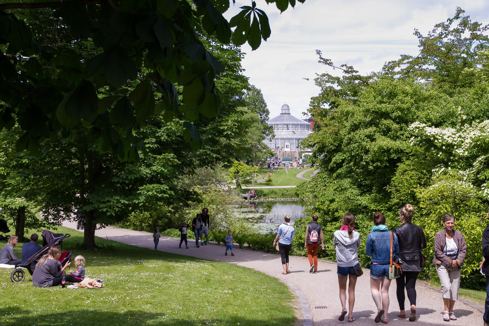
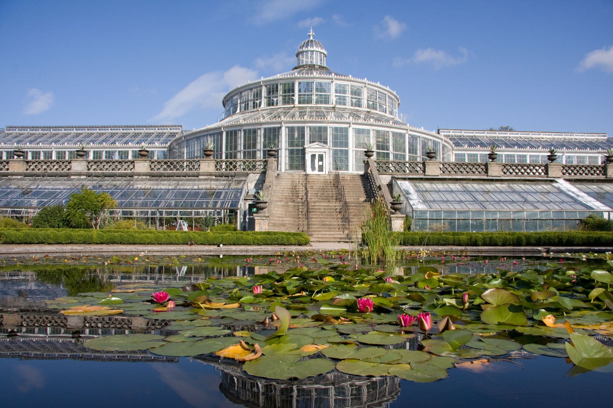
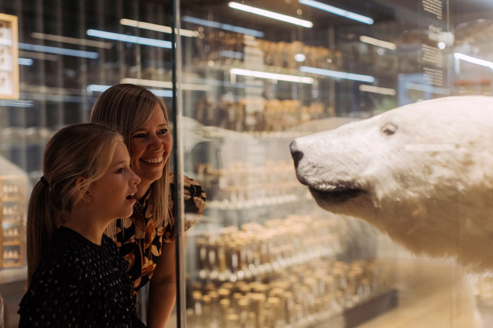
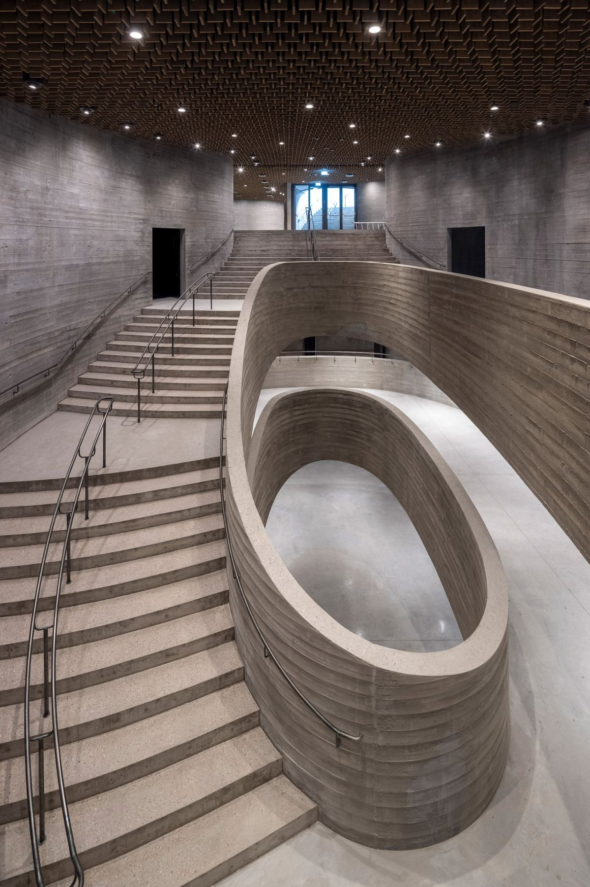
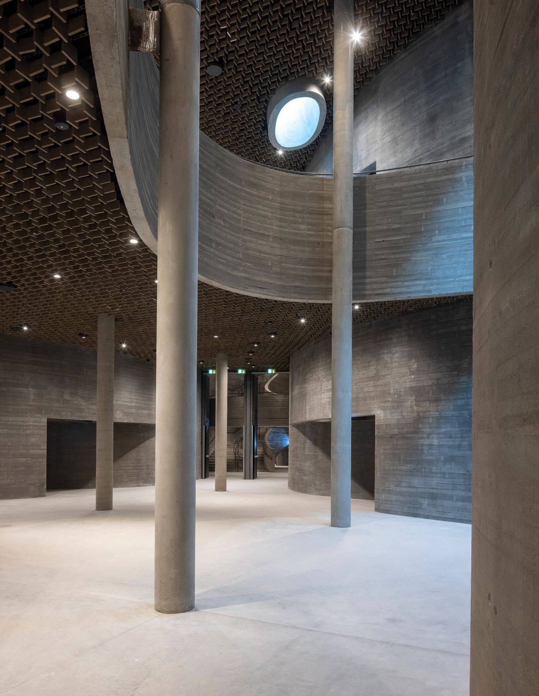

Hvorfor haven
Idé
Du går lige nu oven på otte udstillinger. Museet ligger under Botanisk Have, så publikum går allerede forbi.
Opgaven er at gøre det usynlige synligt, der hvor folk er. Nysgerrighed først, billet bagefter.

Et kampagnebud til åbningen af det nye naturhistoriske museum, 6. marts 2027
Det nye museum ligger under jorden, og haven er låget. Kampagnen får de mennesker, der allerede går gennem haven, til at stå over det næste, de skal besøge.
Idé, udførelse, partnere, indhold, konvertering og evaluering. Tryk på "Se mere" for at læse videre.

Du går lige nu oven på otte udstillinger. Museet ligger under Botanisk Have, så publikum går allerede forbi.
Opgaven er at gøre det usynlige synligt, der hvor folk er. Nysgerrighed først, billet bagefter.


Hvem er med, og hvad folk ser

Hvad virkede
Tiden op til åbningen aktiverer kommende gæster og bygger en mailingliste fra første dag. Den kan bruges til at genaktivere dem efter åbningen.